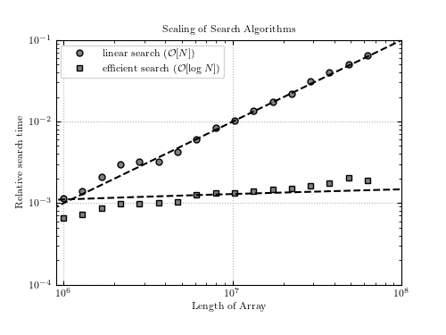

Search Algorithm Scaling¶
This example times and plots the scaling of sorting algorithms.

# Author: Jake VanderPlas <vanderplas@astro.washington.edu>
# License: BSD
# The figure produced by this code is published in the textbook
# "Statistics, Data Mining, and Machine Learning in Astronomy" (2013)
# For more information, see http://astroML.github.com
from time import time
import numpy as np
from matplotlib import pyplot as plt
#------------------------------------------------------------
# Compute the execution times as a function of array size
Nsamples = 10 ** np.linspace(6.0, 7.8, 17)
time_linear = np.zeros_like(Nsamples)
time_binary = np.zeros_like(Nsamples)
for i in range(len(Nsamples)):
# create a sorted array
x = np.arange(Nsamples[i], dtype=int)
# Linear search: choose a single item in the array
item = int(0.4 * Nsamples[i])
t0 = time()
j = np.where(x == item)
t1 = time()
time_linear[i] = t1 - t0
# Binary search: this is much faster, so choose 1000 items to search for
items = np.linspace(0, Nsamples[i], 1000).astype(int)
t0 = time()
j = np.searchsorted(x, items)
t1 = time()
time_binary[i] = (t1 - t0)
#------------------------------------------------------------
# Plot the results
ax = plt.axes(xscale='log', yscale='log')
ax.grid()
# plot the observed times
ax.plot(Nsamples, time_linear, 'ok', color='gray', markersize=10,
label=r'linear search $(\mathcal{O}[N])$')
ax.plot(Nsamples, time_binary, 'sk', color='gray', markersize=10,
label=r'efficient search $(\mathcal{O}[\log N])$')
# plot the expected scaling
scale = 10 ** np.linspace(5, 8, 100)
scaling_N = scale * time_linear[7] / Nsamples[7]
scaling_logN = np.log(scale) * time_binary[7] / np.log(Nsamples[7])
ax.plot(scale, scaling_N, '--k')
ax.plot(scale, scaling_logN, '--k')
ax.set_xlim(9E5, 1E8)
# add text and labels
ax.set_title("Scaling of Search Algorithms")
ax.set_xlabel('Length of Array')
ax.set_ylabel('Relative search time')
ax.legend(loc='upper left')
plt.show()